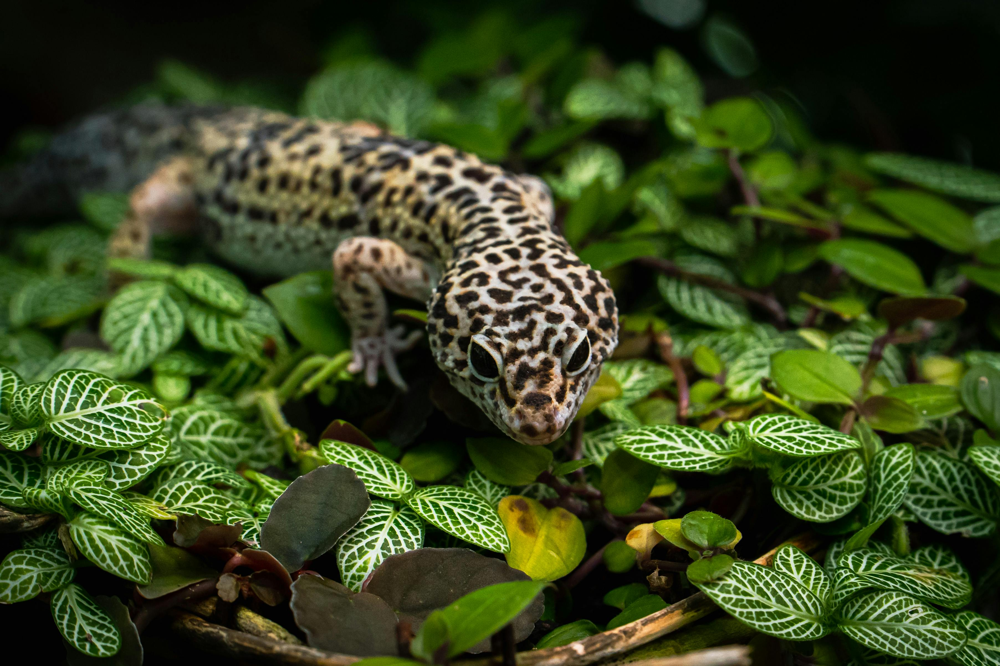

About Leopard Geckos

Leopard Gecko by Pexels.
Leopard geckos are native to the arid regions of Afghanistan, Pakistan, and India. They are insectivorous reptiles that thrive in warm, dry habitats. Their docile nature and ease of care make them ideal pets for beginner reptile keepers.